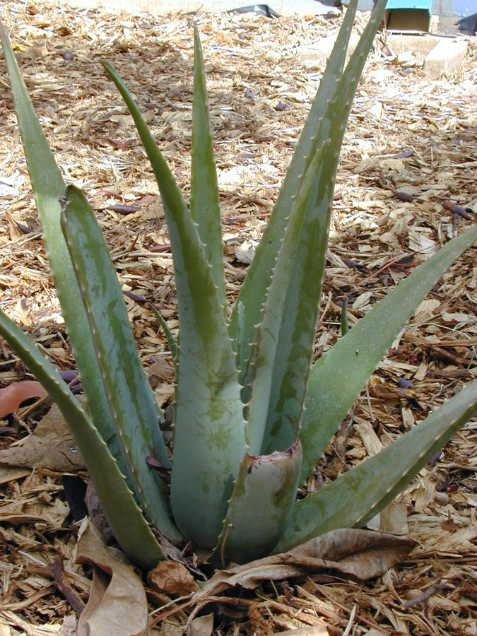

घृतकुमारीAloe Vera
Aloe vera · Asphodelaceae · FLR-0057

- Scientific name
- Aloe vera (L.) Burm.f.
- Family
- Asphodelaceae
- Hindi
- घृतकुमारी
- Status here
- cultivated
- IUCN
- not evaluated
When to look कब देखें
Present all year.
घृतकुमारी / Aloe Vera
Aloe vera (L.) Burm.f. — Asphodelaceae
घृतकुमारी (एलोवेरा या ग्वारपाठा) — उत्तर प्रदेश के घरों, बगीचों और कृषि मेड़ों पर व्यापक रूप से उगाया जाने वाला एक बहुवर्षीय मांसल (succulent) पौधा है। इसके पत्ते घने, कांटेदार किनारों वाले और तलवार के आकार के होते हैं, जिनमें एक पारदर्शी चिपचिपा जेल भरा होता है। यह जेल शीतलता प्रदान करने वाले गुणों के कारण त्वचा रोगों, जलने, और सौंदर्य प्रसाधनों में अत्यधिक उपयोगी माना जाता है। शीत ऋतु में इसके केंद्र से एक लंबा पुष्पदंड निकलता है जिस पर पीले-नारंगी रंग के लटकते हुए फूल लगते हैं। यह सूखा-सहिष्णु पौधा है जिसे बहुत कम सिंचाई की आवश्यकता होती है और यह ग्रामीण घरों में एक आवश्यक घरेलू उपचार के रूप में रखा जाता है।
Quick Identification त्वरित पहचान
| Feature | Description |
|---|---|
| Form | Stemless or very short-stemmed succulent herb (60–100 cm tall), growing in dense rosettes |
| Leaves | Thick, fleshy, lanceolate, grey-green leaves with white specks when young, margins lined with small white teeth |
| Mucilage | The inner leaf tissue contains a thick, clear, gelatinous water-storage sap (gel) |
| Flowers | Tubular, yellow to pale orange flowers (2–3 cm long) hanging in dense spikes on an erect central stalk |
| Roots | Shallow, fibrous root system adapted to absorb quick rainfall in dry conditions |
Field tip: Look for clumps of thick, fleshy, spear-shaped green leaves pointing upwards, carrying soft spikes on the margins. Snapping a leaf reveals a thick, clear gel with a slightly bitter, grassy odor.
Morphology आकारिकी
Biometrics (typical measurements for cultivated specimens in Basti):
| Feature | Measurement |
|---|---|
| Plant height | 60–100 cm |
| Leaf length | 30–50 cm |
| Leaf width | 5–10 cm |
| Flower spike height | 90–150 cm |
| Flower length | 2–3 cm |
Leaves: The leaves are lanceolate, tapering to a sharp point, thick and succulent, containing a high amount of water stored in the central parenchymatous gel tissue. The outer skin is smooth and waxy to prevent water loss.
Flowers & Seeds: The inflorescence is a simple or branched raceme, producing yellow, tubular flowers. The fruits are triangular capsules containing winged seeds, though seed set is rare in cultivated forms, which rely heavily on offsets for propagation.
Vocalisations
Plants do not possess nervous systems or vocal organs and cannot produce sounds.
- Sound production: Silent; no sound production.
Behaviour & Ecology व्यवहार और पारिस्थितिकी
Aloe vera is a xerophytic plant adapted to hot, dry climates. It uses Crassulacean Acid Metabolism (CAM) photosynthesis, opening its stomata at night to capture carbon dioxide while minimizing water loss during hot days. In Basti, it is frequently grown in raised brick borders or clay pots where water drains quickly, as it is highly susceptible to root rot in waterlogged soils.
Life Cycle / Phenology जीवन चक्र
- Vegetative Growth: Grows continuously throughout the year, producing new leaves from the center of the rosette.
- Flowering: Blooms mainly during the cooler winter months (December–February) in northern India.
- Propagation: Primarily propagates vegetatively through offsets ("pups") arising from the base of the parent plant.
Associated Species / Interactions सहजीवी संबंध
- Pollinators: Yellow winter flowers attract solitary bees, sunbirds (
[BRD-0016 Purple Sunbird]), and butterflies seeking winter nectar. - Soil Interactions: Roots form symbiotic associations with arbuscular mycorrhizal fungi, which enhance nutrient uptake in poor soils.
Predators / Natural Enemies शत्रु
- Fungi: Highly susceptible to root rot pathogens like Pythium and Phytophthora during the waterlogged monsoon season.
- Insects: Mealybugs and scale insects occasionally feed on leaf bases.
- Mammals: Rarely eaten by goats or cattle due to the bitter aloin content in the outer leaf latex.
Agricultural / Human Relevance कृषि प्रासंगिकता
Traditional Preparations पारंपरिक और लोक-वानस्पतिक उपयोग
The leaf gel is widely used in Ayurvedic and folk systems in Basti. Five common preparations are:
- Skin Burns and Cuts: Fresh leaf is cut open, and the raw gel is applied directly onto minor kitchen burns, sunburns, or cuts to soothe pain and accelerate healing.
- Digestive Laxative: The thick yellow exudate (latex) from the outer leaf lining is dried to produce a dark substance (Elua), taken in minute doses with warm water as a strong purgative.
- Hair Conditioner: Raw gel is blended with curd and applied to the scalp for 30 minutes before washing to relieve dandruff and dry scalp.
- Acne and Skin Care: Fresh gel is mixed with turmeric powder and applied to the face at night as a traditional anti-inflammatory pack.
- Joint Pain Relief: The fresh gel is cooked with fenugreek seeds and mustard oil to make a warming massage oil applied to painful joints.
Expected Locally स्थानीय रूप से अपेक्षित
Not a field record. Written from published accounts for eastern Uttar Pradesh. No confirmed local sighting yet — if you have seen it, that is what the atlas needs.
अभी तक स्थानीय पुष्टि नहीं। यह विवरण प्रकाशित स्रोतों से है, किसी अवलोकन से नहीं।
A fixture of home gardens across Basti district, particularly in urban and semi-urban households in Bahadurpur and Harraiya blocks. It is commonly kept in pots on rooftops, verandas, or near the courtyard entrances (dwar). Rural families value it as an immediate first-aid plant for burns and minor skin infections.
Distribution वितरण
Global range: Native to the southern Arabian Peninsula, but now widely naturalized and cultivated in tropical, subtropical, and semi-arid regions globally.
In India: Cultivated throughout all states; naturalized in dry sandy areas of western and southern India.
In Uttar Pradesh: Grown extensively as an ornamental and medicinal garden plant.
In Basti district / eastern UP: Cultivated resident; common in household gardens.
Research Questions शोध प्रश्न
- How does the water content and gel yield of Aloe vera leaves fluctuate between the dry summer months and the monsoon in Basti? / बस्ती में एलोवेरा के पत्तों में पानी की मात्रा और जेल की उपज शुष्क गर्मियों और मानसून के महीनों के बीच कैसे बदलती है?
- Does the application of organic compost significantly increase the rate of offset ("pup") production in container-grown Aloe vera?
- Can a child plant an Aloe offset in a pot and track how many new leaves it produces over a three-month period? — A simple hands-on home gardening activity.
- Is Aloe vera gel effective as a natural coating to extend the shelf life of tomatoes harvested in Basti gardens?
- What traditional uses of Aloe gel are most commonly practiced by rural families compared to urban families in eastern UP? / पूर्वी उत्तर प्रदेश में ग्रामीण परिवारों द्वारा एलोवेरा जेल के कौन से पारंपरिक उपयोग शहरी परिवारों की तुलना में अधिक किए जाते हैं?
Similar Species मिलती-जुलती प्रजातियाँ
| Species | Key Difference | हिंदी |
|---|---|---|
| Aloe arborescens (Krantz Aloe) | Grows as a multi-branched woody shrub; leaves are much narrower and more curved; flowers are red-orange. | झाड़ीदार एलो — बहुशाखित तना, लाल-नारंगी फूल |
Agave americana (Century Plant [FLR-0036]) | Leaves are much larger (up to 2 m), extremely rigid and fibrous, with a sharp black terminal spine; gel is toxic and irritates skin. | केतकी / रामबांस — विशाल रेशेदार पत्तियां, जहरीला रस |
| Sansevieria trifasciata (Snake Plant) | Leaves are erect, flat, marked with dark green bands, lack spine-lined margins, and contain no clear jelly pulp. | नाग पौधा — सपाट चित्तीदार पत्तियां, बिना कांटों के |
Taxonomy & Classification वर्गीकरण
Original description. Carl Linnaeus originally described the plant in 1753 as Aloe perfoliata var. vera in Species Plantarum (Vol. 1, p. 320). The Dutch botanist Nicolaas Laurens Burman upgraded it to species rank as Aloe vera in 1768 in Flora Indica (p. 83). The genus name Aloe is derived from the Arabic alloeh, meaning a shining, bitter substance. The specific epithet vera is Latin for "true" or "genuine."
Subspecies. Monotypic as a wild lineage, but numerous cultivated selections exist.
Family and order placement. Placed in the order Asparagales, family Asphodelaceae (formerly placed in Liliaceae or Xanthorrhoeaceae).
Phylogenetic notes. Aloe vera is part of a large clade of succulent leaf-bearing plants concentrated in Africa and Madagascar.
IUCN status rationale. Not evaluated (NE) by the IUCN Red List. As a widely cultivated domestic plant with millions of specimens globally, it is not under conservation threat.
Photo Gallery फोटो गैलरी
References संदर्भ
- Linnaeus, C. (1753). Species Plantarum. Laurentii Salvii, Holmiae, Vol. 1, p. 320. [original description as variety]
- Burman, N.L. (1768). Flora Indica: cui accedit Series Zoophytorum Indicorum, nec non Prodromus Florae Capensis. Amsterdam, p. 83. [established species status]
- Sivarajan, V.V. & Balachandran, I. (1994). Ayurvedic Drugs and Their Plant Sources. Oxford & IBH Publishing, New Delhi, pp. 156–158.
- Reynolds, T. (Ed.). (2004). Aloes: The Genus Aloe. CRC Press, Boca Raton.
- ICAR-Directorate of Medicinal and Aromatic Plants Research (DMAPR). Good Agricultural Practices for Aloe vera. Anand, Gujarat.
- GBIF Occurrence Data — Aloe vera (2026). GBIF taxon key: 2777724.
Source file: species/flora/medicinal/aloe_vera.md